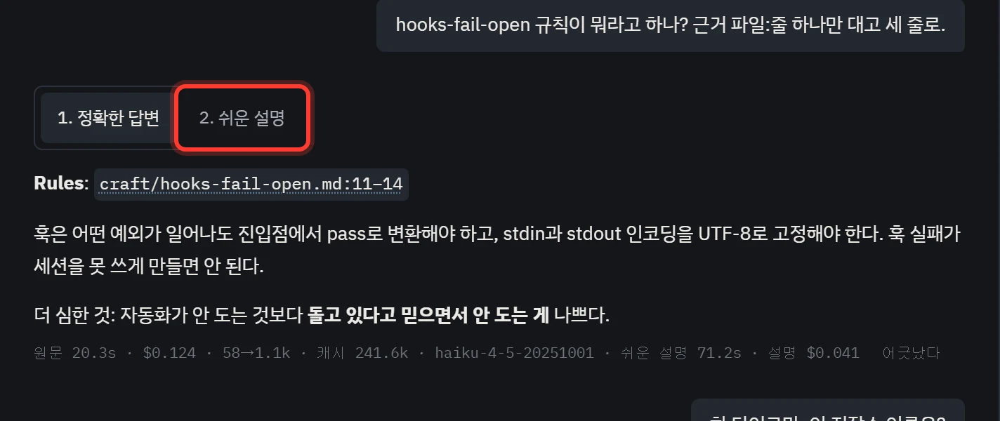
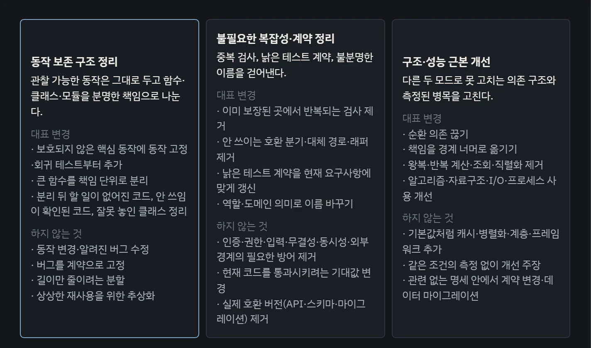

이렇게 말하면, 이렇게 돌아와요
가운데 대화 칸 위의 탭 넷(다음 작업 · 리팩터링 · 위키 · 회고)이 누구에게 말할지를 정해요. 오른쪽은 맡긴 작업의 [에이전트]와 [리뷰]예요. 장마다 어디에 무엇을 적는지, 어떤 답이 오는지, 그다음 이럴 땐 어떻게 하는지를 모았어요.
아직 앱을 안 깔았다면 설치법부터 해요.
1[위키]
규칙이나 결정이 기억나지 않을 때 물어요
탭에서 [위키]를 고르고 입력칸에 물어요. 저장소의 문서, 결정 기록, 공통 규칙을 근거로 답해요.
근거를 대 달라고 하면 답에 파일과 줄이 붙어요. 그 경로를 누르면 원문이 옆에 열려요. 길이도 정해 줄 수 있어요. “세 줄로”, “한 단어로만”처럼요.
오른쪽은 이 저장소에서 실제로 주고받은 대화예요. “hooks-fail-open 규칙이 뭐라고 하나? 근거 파일:줄 하나만 대고 세 줄로.”라고 물었더니, 규칙 파일의 11–14줄을 대고 세 줄로 답했어요.


| 이럴 땐 | 이렇게 해요 |
|---|---|
| 답이 어려워요 | 답 위의 [2. 쉬운 설명]을 눌러요. 같은 답을 풀어 쓴 판이 원문과 함께 준비돼요. |
| 없는 걸 물었어요 | 지어내지 않고 없다고 답해요. 실제로 worktree-safety를 물었더니 “없음. 이 저장소에 그런 문서 또는 규칙 페이지가 없습니다.”라고 답했어요. 다른 이름으로 다시 묻거나 [지도]에서 찾아요. |
| 답이 틀렸어요 | 답 아래 [어긋났다]를 누르고 어떻게 틀렸는지 고르세요. 쌓인 기록은 회고의 재료가 돼요. |
| 무엇을 읽고 답했는지 보고 싶어요 | [근거와 판단 보기]를 열어요. 답이 읽은 원문이 나와요. |
| 한 갈래 문서에서만 찾고 싶어요 | 위의 [모든 문서]를 [훅 연결] · [제품 유지보수] · [Jev 유지보수] 중 하나로 좁혀요. 공통 규칙은 어느 범위에서든 함께 찾아요. |
2[다음 작업]
다음에 할 일은 대화로 명세 한 장에 정해요
[다음 작업] 탭에서 [후보 내기]를 누르거나 “다음에 뭐 하면 좋을까?”라고 물어요. 계획의 남은 단계, 열린 PR, 최근 결정, 경고를 모아 후보 3~5개를 출처와 함께 내요.
하고 싶은 게 이미 있으면 그대로 적어요. 범위와 끝났다고 볼 기준을 선택지로 하나씩 되물어요. 추천이 맨 앞에 와요. 다 정해지면 목표 · 완료 조건 · 제외가 담긴 명세 카드가 나와요.
나README의 질의 화면 확인 절에 tool/test_specs.py와 다음 작업 초점의 확인 방법을 더하자. 범위와 완료 조건은 하나씩 되물어 줘.
실제 기록(2026-09-25)을 줄였어요. 이 명세는 PR #15가 되어 머지됐어요.
| 이럴 땐 | 이렇게 해요 |
|---|---|
| 후보가 마음에 안 들어요 | 이유를 말하고 다시 달라고 해요. “문서 말고 테스트 쪽으로 다시 골라 줘”처럼요. |
| 선택지에 원하는 게 없어요 | 고르지 말고 입력칸에 직접 적어요. |
| 명세를 고치고 싶어요 | 고칠 점을 말하면 같은 명세의 새 판(판 2, 판 3…)으로 고쳐요. 카드의 [명세 수정]으로도 고쳐요. |
| 한두 PR로 안 끝날 것 같아요 | 바로 맡기지 말고 [계획]으로 계획부터 세워요. |
3[시작] · [에이전트]
[시작]을 누르면 PR까지 알아서 가요
명세 카드의 [시작]을 누르면 작업 브랜치와 작업 폴더를 따로 만들고, Claude Code나 Codex가 거기서 일해요. 왼쪽 목록에 작업이 생기고, 누르면 오른쪽 [에이전트]에서 진행이 보여요.
에이전트가 끝났다고 해도 바로 믿지 않아요. 서버가 저장소의 검사 명령을 직접 다시 돌리고, 통과해야 PR을 올려요. 결과는 대화 칸에 한 줄로 돌아와요.
PR #15 — README의 확인 절에 tool/test_specs.py가 확인하는 것과, 후보부터 harvest 확인까지의 창 확인 순서를 적었어요. 완료 조건 7개 통과
PR #15 머지됨
2번 명세의 실제 결과 줄을 한국어로 옮겼어요.
| 이럴 땐 | 이렇게 해요 |
|---|---|
| 일하는 도중 방향을 바꾸고 싶어요 | 오른쪽 [에이전트] 아래 입력칸(“지시를 입력하세요”)에 적어 보내요. |
| 에이전트가 되물어요 | 선택지로 와요. 고르거나 입력칸에 직접 적어요. |
| 작업을 버리고 싶어요 | 왼쪽 목록에서 그 작업트리를 지워요. 도는 에이전트는 멈추고 커밋하지 않은 변경은 사라져요. 브랜치와 이미 올린 PR은 남아요. |
| 명세 없이 바로 시키고 싶어요 | 왼쪽 [+ 새 작업]을 누르면 [다음 작업] 대화에 한 줄 명세 틀이 들어가요. 채워 보내면 명세가 되고, 그 [시작]으로 맡겨요. |
4[리뷰]
리뷰는 라운드를 돌리고, 머지는 사람이 눌러요
PR이 올라가면 오른쪽 [리뷰]에서 [리뷰 시작]을 눌러요. 따로 떨어진 읽기 전용 리뷰 칸이 라운드마다 읽고, 고칠 게 있으면 작업 칸이 그것만 고쳐서 다음 라운드로 가요. 라운드마다 누를 필요는 없어요.
“머지 허용”이 나오고 그 커밋에서 최종 검사까지 통과하면 [머지 ▸]가 나와요. 누르는 건 사람이에요.
- 라운드 1고쳐야 해요P1 둘, P2 하나. 지도에서 문서 목록과 링크 방향이 거꾸로였어요.
- 라운드 2–4고쳐야 해요라운드마다 P1 하나씩. 작업 칸이 그 지적만 고쳤어요.
- 라운드 5머지 허용P1 없음. 남은 P2 하나는 PR 댓글로 남기고 머지했어요.
| 이럴 땐 | 이렇게 해요 |
|---|---|
| “멈춤”이 떴어요 | 멈춘 이유가 함께 적혀 있어요. 읽고 풀었으면 [계속]을 눌러요. |
| 루프를 잠깐 세우고 싶어요 | [멈춤]을 눌러요. [계속]으로 이어요. |
| 명세 없이 올린 PR도 리뷰하고 싶어요 | 왼쪽 [리뷰 루프 (n)]에서 그 PR을 골라 넣어요. 멈춘 루프도 여기서 다시 넣어요. |
| 같은 지적이 자꾸 돌아와요 | 따로 할 건 없어요. 고쳤다던 지적이 다시 나오면 앱이 다음 수정 전에 조사부터 해요. |
| 리뷰 모델을 바꾸고 싶어요 | [리뷰] 위의 리뷰 모델을 골라요. 일한 모델과 다른 모델로 읽게 할 수 있어요. |
5[계획]
큰 일은 계획 PR부터 올려요
탭 아래 [계획]을 누르면 ‘계획 세우기’ 창이 떠요. 목표, 맥락, 폴더 이름, 단계 수, 그리고 시간 · 호출 수 · 토큰 한도를 적어요.
계획자가 조사해 계획 문서를 쓰고 PR을 올리면, 리뷰어가 따로 읽고 수정자가 고쳐요. 계획 PR이 머지돼도 구현은 저절로 시작하지 않아요. 단계 하나씩 [다음 작업]에서 명세로 만들어 맡겨요.
| 목표 | 창마다 자기 저장소에서 일하게 하기 |
| 맥락 | 지금은 서버가 모든 창에 선택한 프로젝트 하나만 들고 있어서, 두 저장소를 오가며 일해야 한다. 볼 문서: docs/architecture.md |
| 폴더 이름 | window-project → docs/plans/window-project/ |
| 단계 수 | 4 |
| 이럴 땐 | 이렇게 해요 |
|---|---|
| 계획자가 범위를 물어요 | 범위를 바꾸는 판단은 선택지로 물어요. 골라 주면 이어서 써요. |
| 한도에 닿았어요 | 시간 한도면 도는 턴을 끊어요. 토큰을 넘으면 실패로 적고 더 보내지 않아요. 한도를 늘려 다시 시작해요. |
위 표는 이 저장소의 실제 계획(docs/plans/window-project/)을 예로 채운 모습이에요.
6[리팩터링]
목적 하나를 고르면, 조사하고 명세를 내요
[리팩터링] 탭에서 목적 카드 하나를 골라요. 조사 · 구현 · 리뷰 모델을 고르고 [리팩터링 시작]을 누르면, 조사는 코드를 읽기만 하며 흐름별 설명과 실행할 명세를 내요.
명세마다 [시작]은 따로 눌러요. 그다음은 3번 · 4번과 같아요. 앞 명세가 머지되기 전이면 뒤 명세는 시작되지 않아요.


| 이럴 땐 | 이렇게 해요 |
|---|---|
| 조사 결과가 궁금해요 | 입력칸에 물어요. “두 번째 흐름에서 뭘 찾았어?”처럼요. |
| 명세 하나가 너무 커요 | “이 명세를 둘로 나눠 줘”라고 해요. 다듬기도 대화로 해요. |
| 사용량이 모자라요 | 아직 시작하지 않은 명세는 [모델 바꾸기]로 구현 · 리뷰 모델만 바꿀 수 있어요. 이미 시작한 명세는 끝까지 같은 모델로 가요. |
7[회고]
하루를 돌아보고, 남길 것만 골라요
[회고] 탭에서 “오늘 회고해 줘”라고 해요. 오늘의 커밋과 대화를 읽고, 어긋난 자리를 세어 규칙 후보를 내요. 회고는 파일을 직접 고치지 않아요. 무엇을 남길지는 사람이 골라요.
나오늘 회고해 줘
후보 줄은 예시예요. 버튼은 앱과 같아요.
| 이럴 땐 | 이렇게 해요 |
|---|---|
| 모든 프로젝트에 남기고 싶어요 | [위키로]를 눌러요. 규칙 페이지를 만드는 요청이 [다음 작업] 입력칸에 들어가요. 보내면 명세가 되고, 머지되면 다음 세션부터 훅이 그 규칙을 읽혀요. |
| 이 저장소에만 해당해요 | [CLAUDE.md 로]를 눌러요. 그 저장소의 CLAUDE.md에 한 문장을 넣는 요청이 들어가요. |
| 남길 필요가 없어요 | [버린다]를 눌러요. 아무것도 남지 않아요. |